European electrical accessories
Electrical accessories found in continental Europe tend to be fairly similar across countries, though there are still some differences and notable exceptions.
Generally speaking, these items are installed in a round wall box and then a separate cover plate is added, specific to the brand and series of the accessory. Multiple devices can be mounted next to each other using larger boxes, which can be in either a horizontal or vertical orientation; as such, they tend to have two sets of screw holes so they can be installed in either direction.
Busch-Jaeger light switch
Rating: 10A 250V
This is a typical example of a European light switch, in this case made by Busch-Jaeger as part of their "Duro 2000 SI" series. It's formed of three pieces: the switch mechanism itself, a key cover and a faceplate.
The key cover - which is the actual moving part of the switch touched by the user - clips on top of the main assembly and can be of different styles depending on the need. Aside from the plain one shown here, versions exists with text, an icon or a window for a backlight. The faceplate, instead, varies on the number of accessories, and thus wall box, being used.
The terminals are on the back of the mechanism and are screwless: the wires - which must be solid-core - are held in place simply by pushing them in and can later be removed by pushing down on levers next to each connection. After mounting the switch, either with screws or claws depending on the type of wall box, the faceplate and key cover are installed, with the former being held in place by the latter. Removing it later on can take a bit of force, so it's often helpful to use a flat-blade screwdriver.
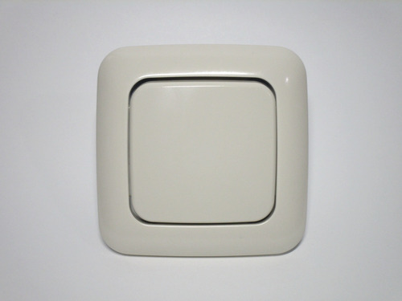 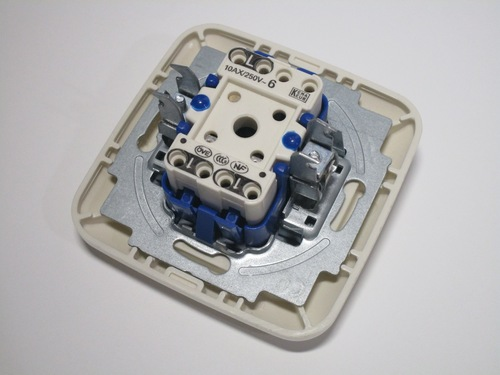 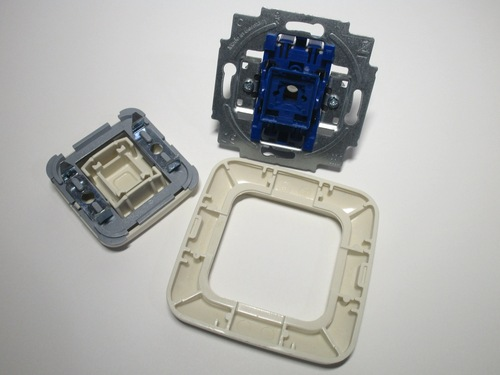{kind=link}
{kind=link}
{kind=link}
Legrand double light switch
Rating: 10A 250V
Double light switches have two separate switch mechanisms, allowing the control of two different fixtures. This one is made by Legrand, as part of their Valena Life series, which is designed to look very modern.
Legrand switches are installed differently from the Busch-Jaeger one shown previously: the key covers are already installed and can easily be removed if necessary. Behind them, icons are present to indicate the on and off positions of the switches. The frame of the device is made of metal enclosed by plastic; because of this, the faceplate has been designed to simply clip on or off without requiring a lot of force.
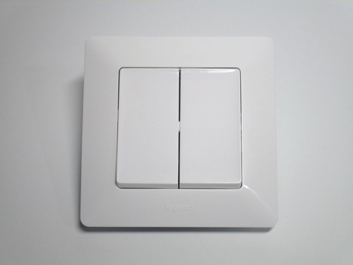 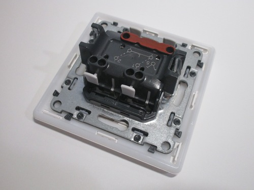 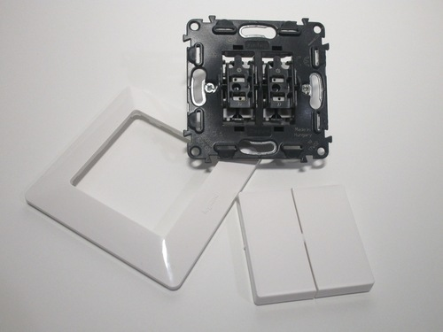{kind=link}
{kind=link}
{kind=link}
Surface-mount double light switch
Rating: 10A 250V
Surface-mount electrical accessories are often used in garages and commercial/industrial installations. This double light switch is a typical example of a surface-mount item; it's built very well, as it has to withstand tougher conditions than an ordinary light switch.
Once opened, a rubber grommet covering the edge of the casing is visible. While this device isn't waterproof, the grommet is still helpful to protect against moisture and accidental splashes. The casing of the switch is made entirely of plastic, though there's still an earthing terminal which may be useful to avoid needing a separate wire connector.
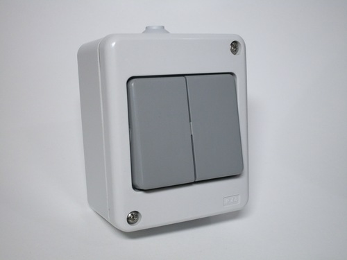 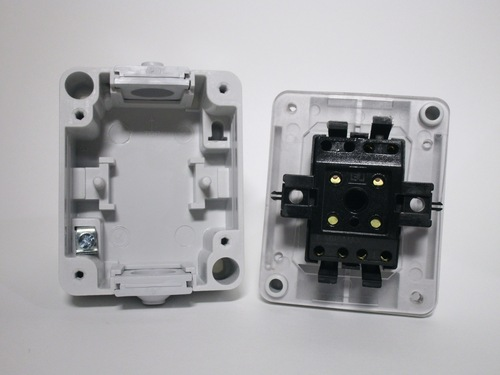 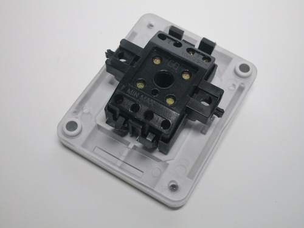{kind=link}
{kind=link}
{kind=link}
Surface-mount light switch
Rating: 10A 250V
This surface-mount switch, made by the Austrian company e2 Elektro, has a very interesting design: all four sides have a removable plate, which can be removed and interchanged between each other. The included ones are two solid plastic pieces and two rubber grommets for inserting a cable. There are also special ones available which allow multiple devices to be connected together, for easier mounting and cable routing.
The switch mechanism can be removed from the main housing, which makes mounting and wiring easier. The terminals are all of the screwless type. The key cover has a small white section - this is a label, which can be written to by disassembling the front cover.
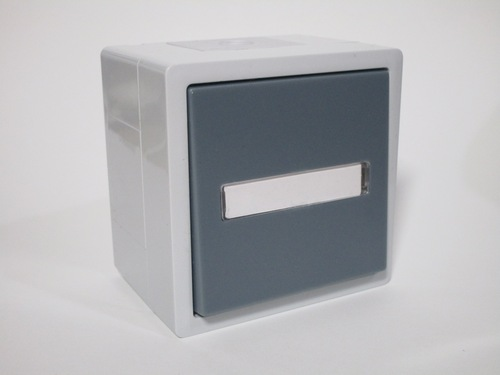 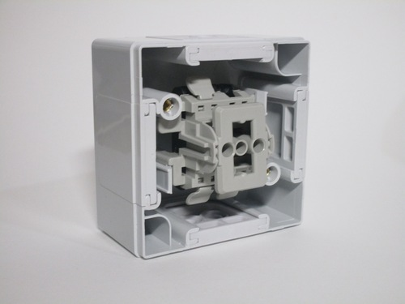 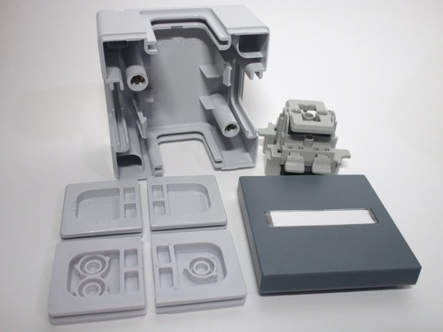{kind=link}
{kind=link}
{kind=link}
Appliance connection unit
Rating: 5x2.5mm2 cable, 400V
This device allows the connection of a hard-wired appliance, such as an electric stove. It mounts to a normal wall box and protrudes from the wall by about 1cm. Once opened up, a "choc block"-style terminal strip with five terminals is present, for the three phases, a neutral and the protective earth.
Similar devices are quite common throughout Europe to connect three-phase stoves, usually on a 3x16A circuit. In some countries specialised plugs are used for this purpose instead, such as the Perilex standard in Germany and similar ones in France and Belgium.
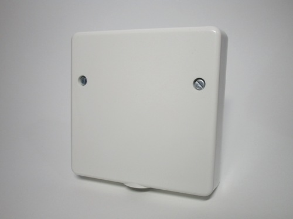 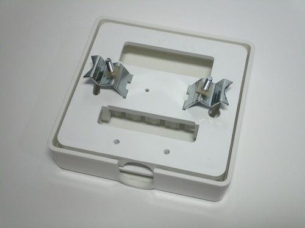 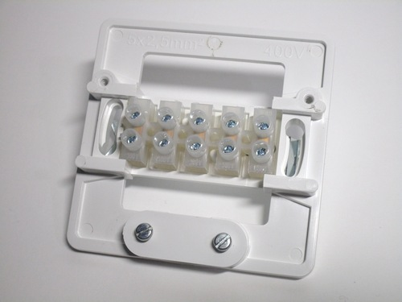{kind=link}
{kind=link}
{kind=link}